呉の戦災
防空体制
・警防団･家庭防火群
1939年(昭和14)から警防団がつくられた。これは、消防に従事してきた消防組と、防空のためにつくられていた防護団とを統合したもので、民間防空の中核となった。
呉市警防団は12ブロックの分団に分けられ、それぞれ約150人で編成され、合計2337人で発足した。団長･副団長は県知事から、分団長以下は警察署長から任命された。団員は、警察署･消防署の指導の下に訓練に励んだ。
警防団は、現在の消防団のもとである。家庭防火群(家庭防空群ともいう)は、15月以内を一群とした民間防空組織である。
1940年(昭和15)に町内会が設置されたのにともなって、隣組単位に再編成された。
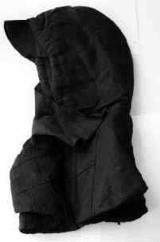
防空頭巾 鉄兜（かぶと）の代用、落下する高射砲弾から守る。
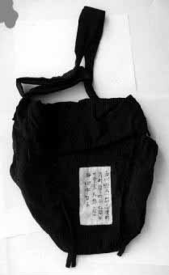
非常袋 医薬品・通帳ほか貴重品、非常用の食糧など。
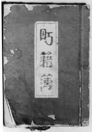
町籍簿 町内会で住所、氏名を登録し、被災時の証明書も発行した。
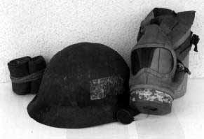
ゲートル.鉄かぶと.防毒マスク警防団に配布された。ゲートルは膝下の脚絆。
・防空演習
「焼夷弾の燃え方と消火方法」
1937年(昭和12)に防空法が施行されてから、灯管制中心の防空演習が、市民の訓練中心のものに変わった。
バケツリレーや火たたきなどによる消火訓練、毒ガス戦を想定した訓練、救護、炊出し、連絡･伝達などがその内容で、警防団員の指導にしたがって家庭防火群が動くという形で行なわれた。
アジア･太平洋戦争の開始とともにその回数は増え、呉では、1944年(昭和19)には43回も実施されている。
しかし、爆弾や焼夷弾が大量に投下された空襲時には、まったくといってよいほど役にたたない、無駄な訓練でもあった。
・防空壕･待避所
呉市の防空壕は、町内合ごとに公共防空壕がつくられた。
その規模は幅2メートル、高さ2･2メートル、長さ30メートルで、収容人員90人を基準とした横穴防空壕であった。
公共待避所は、道沿いに100メートルあるいは50メートルおきに、15人収容のものが設置された。工場や各家庭用の待避所もつくられた。
防空壕･待避所は、現在も残っているものがあり、戦争の記憶を今に伝えている。
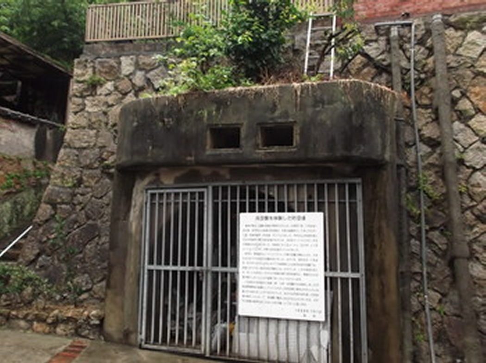
防空壕 両城町に残る例（Ｍ・Ｋさん提供）
 防空壕・防火用水の配置全図 （呉市史編纂室蔵）
防空壕・防火用水の配置全図 （呉市史編纂室蔵）
≪上記の部分図≫
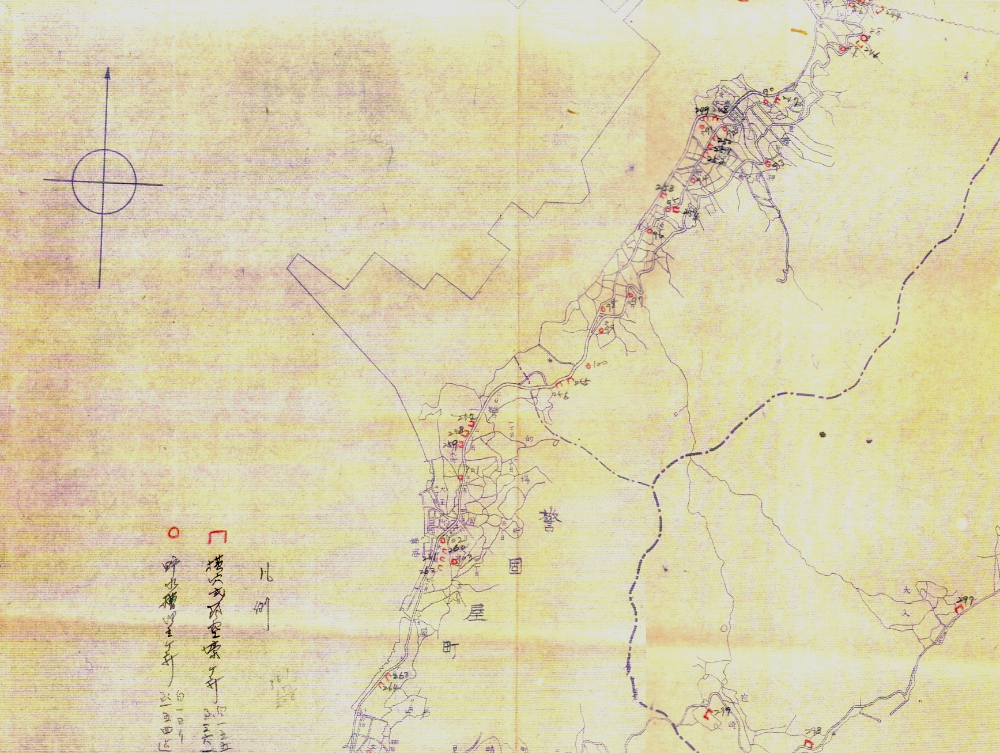
宮原・警固屋方面の防空壕・防火用水
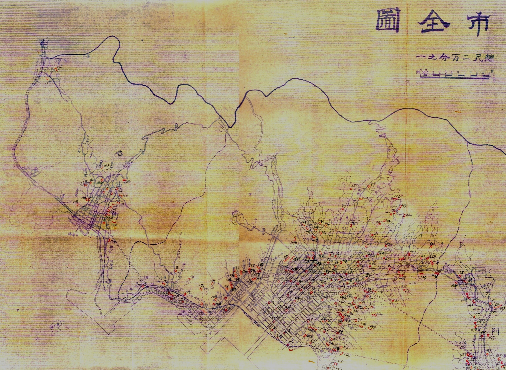
旧呉市街から阿賀方面
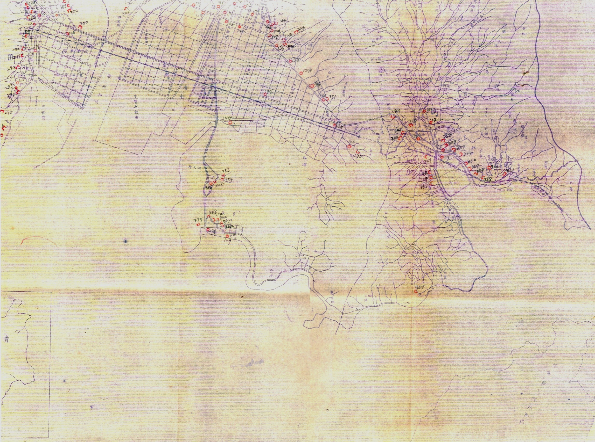
広・仁方方面の防空壕・防火用水
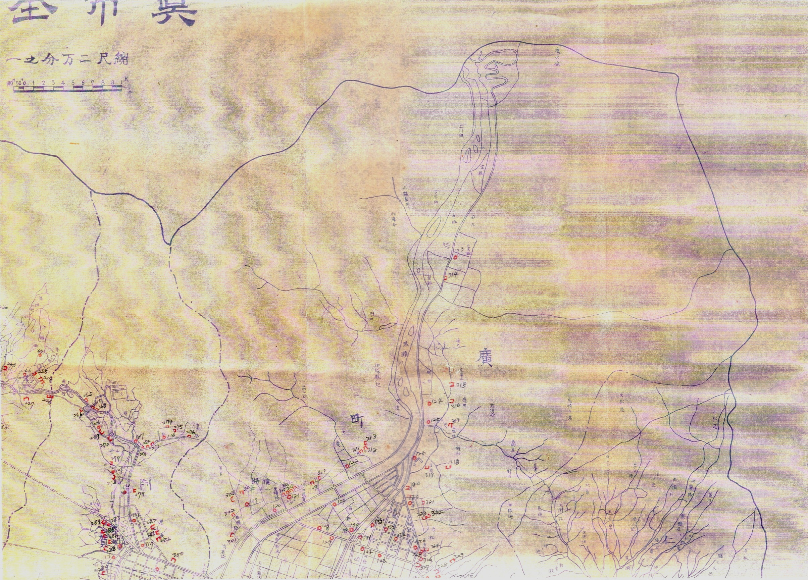
広北部方面
・建物疎開
日本の都市は、木造家屋が密集し人口も過大に集中しており、空き地が少なく道路も狭く、空襲には弱く被害が多いことが予想された。そこで政府は、1943年(昭和18)12月に、建物疎開･人員疎開･施設疎開を実施することとした。建物疎開は、まず疎開空地帯を造成して、防空区画をつくり、それに相当数の疎開空地を配するというものであった。
1944年(昭和19)5月、呉市は「重要地域都市」に指定され、消防道路と空き地をつくるため建物疎開が始まった。塩川の両岸や、休山山ろくか二河公園まで丁字型の疎開地がつくられた。
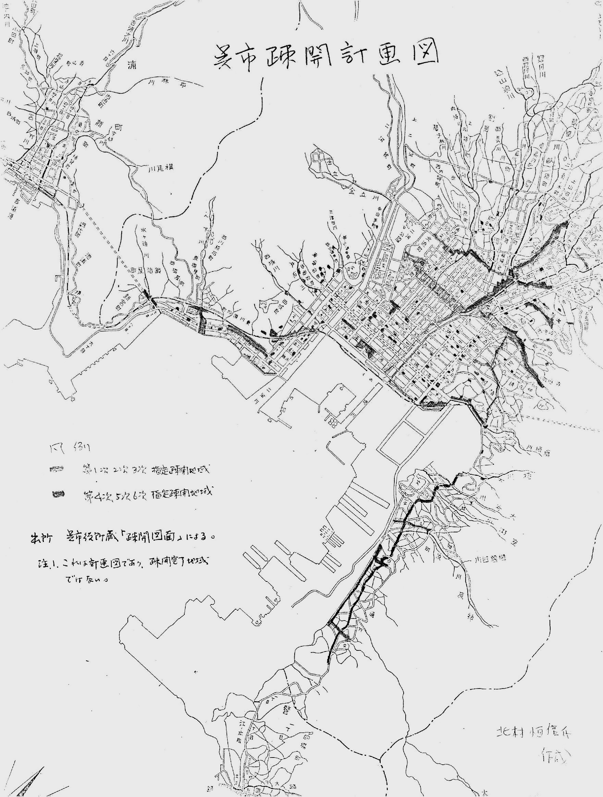
呉市建物疎開計画図（呉市史編纂室蔵）
≪部分図≫
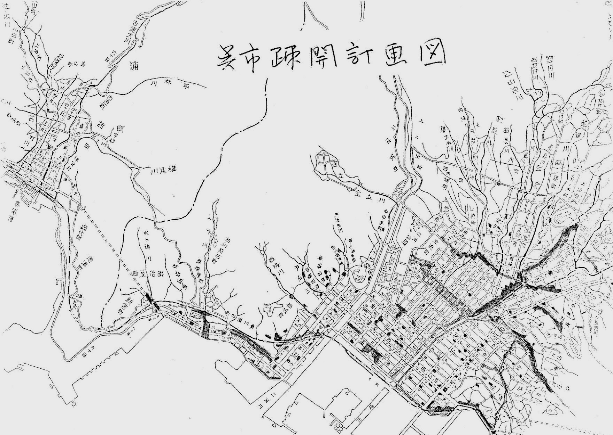
呉市中心部 の建物疎開計画
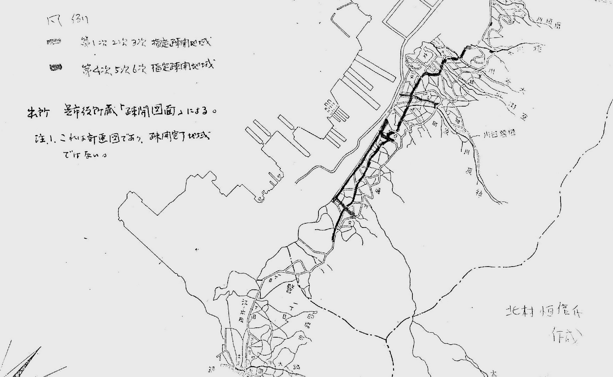
宮原方面 の建物疎開計画
この疎開地一帯が、現在の市役所や体育館、中央公園になっている。
呉市における疎開家屋の合計は6051戸、疎開総面積は、借地分が約37･4ヘクタール、買収分が約8･8ヘクタールの、合計46･2ヘクタールにものぼった。突如として住を失うのだから、市民のこうむった迷惑は大きかった
・人員疎開
建物疎開と同じ時期に人員疎開も始まった。呉においては、6051戸の建物疎開者2万4204人以外にも、1次から4次まで7292所帯が疎開したといわれる。
一家の柱が召集または徴用されたり戦死した家族、つまり女性･老人･子どもだけになった家族は、戦火を避けて疎開していった。
しかしその一方で、疎開がままならぬ人たちも多かった。
・学童疎開
1944年(昭和19)6月に、国民学校初等科(当時の小学校)3年以上6年までの児童で、縁故疎開できない児童を集団で疎開させることが、閣議で決定した。こうして、この年の8月ごろから東京をはじめ全国の都市で、学童疎開が始まった。
呉では、1945年(昭和20)3月19日の初空襲の翌日、20日に集団疎開実施を決め、3月31日に、鍋･坪内･宮原･横路の各国民学校が出発したのをはじめ、市内27校の3年生以上3732人が、広島県高田郡など7郡の寺119ヵ所へ疎開した。
疎開先の生活は飢えと不衛生に'悩まされ、年端もいかぬ児童たちの苦しく悲しかった体験話にはことかかず、敗戦後の9月8日から10月にかけての引き揚げで終わった。
・防空砲台
第1次世界大戦後、航空機の発達に伴い、防空砲台の必要性が認識され、
呉軍港の周辺にも、高島台･灰ヶ峰など10ヵ所に30門の高名砲が設置されたが、それらは旧式のものであった。そこで1944年から1945年にかけて、
防空高名砲台20ヵ所82門、機銃砲台12ヵ所49基103挺、探照灯台30ヵ所に
増強がなされた。それにともなって、警備隊員も5807人に増やされた。
しかし、射撃密度などの不足によって、実際にアメリカ軍機が来襲したときにはほとんど役にたたなかった。
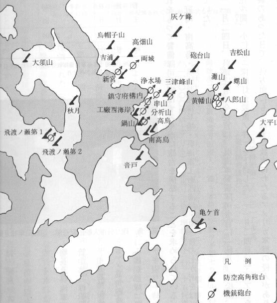
防空砲台配置図
トップページに戻る